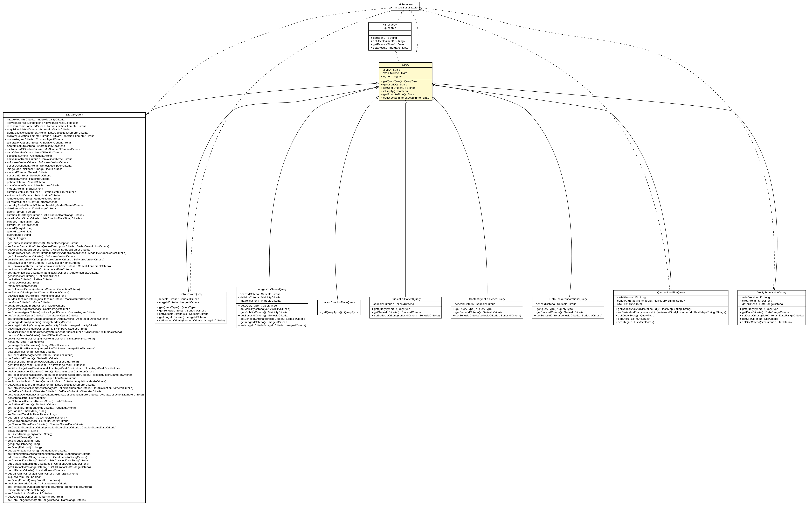

gov.nih.nci.ncia.query
Class Query

java.lang.Object
 gov.nih.nci.ncia.query.Query
gov.nih.nci.ncia.query.Query
- All Implemented Interfaces:
- Queriable, java.io.Serializable
- Direct Known Subclasses:
- ContentTypeForSeriesQuery, DataBasketAnnotationsQuery, DataBasketQuery, DICOMQuery, ImagesForSeriesQuery, LatestCurationDateQuery, QuarantinedFileQuery, StudiesForPatientQuery, VerifySubmissionQuery
public abstract class Query
- extends java.lang.Object
- implements Queriable, java.io.Serializable
- See Also:
- Serialized Form
|
Field Summary |
private java.util.Date |
executeTime
|
private org.apache.log4j.Logger |
logger
|
private java.lang.String |
userID
|
|
Constructor Summary |
Query()
|
|
Method Summary |
java.util.Date |
getExecuteTime()
|
abstract QueryType |
getQueryType()
|
java.lang.String |
getUserID()
The user that is executing the query |
boolean |
isEmpty()
The following method checks if a given Query is empty |
void |
setExecuteTime(java.util.Date executeTime)
Sets the last execute time for this query |
void |
setUserID(java.lang.String userID)
Setter for the userID |
| Methods inherited from class java.lang.Object |
clone, equals, finalize, getClass, hashCode, notify, notifyAll, toString, wait, wait, wait |
userID
private java.lang.String userID
executeTime
private java.util.Date executeTime
logger
private org.apache.log4j.Logger logger
Query
public Query()
getQueryType
public abstract QueryType getQueryType()
- Returns:
- the query type
getUserID
public java.lang.String getUserID()
- The user that is executing the query
- Specified by:
getUserID in interface Queriable
- Returns:
- userID
setUserID
public void setUserID(java.lang.String userID)
- Setter for the userID
- Specified by:
setUserID in interface Queriable
- Parameters:
userId - - the user that is executing the query
isEmpty
public boolean isEmpty()
- The following method checks if a given Query is empty
- Returns:
- true if the query is empty
getExecuteTime
public java.util.Date getExecuteTime()
- Specified by:
getExecuteTime in interface Queriable
- Returns:
- the last execute time for the query
setExecuteTime
public void setExecuteTime(java.util.Date executeTime)
- Sets the last execute time for this query
- Specified by:
setExecuteTime in interface Queriable
- Parameters:
the - last execute time